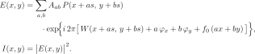

横向剪切干涉仪把被测波前复制成几份并横向错开，错开区域内各份波前发生干涉， 波前信息以条纹形状记录在干涉图中；反演的任务是从干涉图反推出波前。 棋盘光栅剪切干涉仪的特点是一次测量同时在 x、y 两个正交方向产生剪切， 一副干涉图同时携带两个方向的波前差分信息。
本报告复现刘志祥博士论文《二维剪切干涉检测技术研究》的完整信号链，并实现三条反演路线： 论文的多步相移路线与单帧载频傅里叶路线， 以及一条论文之外、直接在光强域做非线性拟合的 Levenberg–Marquardt（LM）路线。 三条路线共用同一个前向光强模型，区别只在"如何从干涉图回到波前"。 报告中的波前一律以"波"为单位：1 波即一个波长的光程差，对应相位 2π、干涉图上的一根条纹。
代码按信号链分为三层：基础层描述系统参数、光栅衍射级次与 Zernike 多项式； 前向层把给定波前算成探测器上的干涉光强；反演层有三条路线——论文的相移与傅里叶两条 解调–重构路线，以及直接在光强域迭代的 LM 路线（图 1）。
前向模型不逐一实现论文按重叠区域列出的光强公式，而是采用统一的级次相干叠加模型：
棋盘光栅把出瞳场分解为探测器坐标系下的衍射级次 (a,b)，第 (a,b) 级携带振幅
Aab 和一个相对零级平移 (a·s, b·s) 的光瞳副本 P，
其相位由波前 W、相移项与载频项共同构成。探测器上的复振幅与光强为

其中 W 为待测波前（单位：波），s 为剪切比。相位项按工作模式二选一：
相移模式下光栅平移产生与级次成正比的相移 δab = 2π(a·tx + b·ty)
（论文式 2-10），此时 f₀ = 0——光栅每平移一步采集一幅干涉图，称为一帧，
N 步相移产生 N 帧，默认每方向 8 步、x 与 y 两方向共 16 帧；
傅里叶模式下 φx = φy = 0，
载频项 2πf₀(ax+by) 把拍频搬离零频，使单帧即可解调。默认叠加 5 个级次
{(0,0), (±1,0), (0,±1)}，可扩展为含 (±3,0), (0,±3) 的 9 级次。
由于每个级次的光瞳随级次平移，叠加结果自动把探测器面划分为 2/3/4/5 光束重叠区（论文图 2-8/2-9）：
中央五束全覆盖处即论文的五光束干涉区，向边缘随覆盖光束数递减，无需任何区域记账。
级次振幅有闭式 Amn = SmSn/2，其中 Sk
为一维方波傅里叶系数；理想占空比下 DC 振幅 1/2、每个 ±1 级效率 4.11%，
与论文表 2-3 逐项一致。占空比 d 偏离 1/2 时引入相位因子 e−2iπad
（光栅原点平移），保证 d=1/2 处无符号跳变。为验证等价性，
paper_region_intensity 逐字转录了论文分区公式 (2-12)–(2-16)，
叠加模型在各区域与其逐点一致到相对差约 10−16（tests/test_forward_vs_paper.py）。
两条路线共用同一个三步流程：解调（从干涉图提出差分相位）→ 解包裹（把被折回 (−π,π] 的相位接回连续值）→ 差分 Zernike 拟合（由差分波前求波前系数）。区别只在第一步如何从光强得到相位。
解调得到的是包裹相位：反正切只能给出 (−π,π] 内的值，真实相位超出的部分
被折回，相位图上出现 2π 跳变；解包裹沿像素把跳变逐点接回。解调同时给出逐像素的调制度——
条纹幅度的度量，也是该像素相位可靠性的天然权重。解包裹后的差分相位换算为差分波前
ΔW，最后对差分 Zernike 基 ΔZj = Zj(x+s,y) − Zj(x−s,y)
做加权最小二乘，得到波前的 Zernike 系数。
光栅沿一个方向分 N 步平移、每步采一帧；N 帧光强对已知步进做最小二乘，
ψ = atan2(−ΣIk sinδk, ΣIk cosδk)（论文式 2-20）
给出包裹相位。解出的相位还带一个由光栅决定的常量——理想棋盘光栅下 x 方向为 π、y 方向为 0，
两方向恰差半根条纹——先按模型扣除再解包裹。x、y 两个方向各采一组帧，得到两幅 ΔW。
这条路线的代价是帧数与标定：每个方向至少 3 步，且相移步长必须先标定准确。
引入离焦载频把 ±1 级拍频搬到频谱 ±f₀ 处，单帧即可解调。
论文式 (2-48) 给出的载频为 f₀ = 2m/s；本项目默认取其 1/4，即
f₀ = m/(2s)——论文载频在默认 128² 网格上超过 Nyquist 采样极限，
故默认取更低载频，两者的解调数学相同。在能满足采样的 512² 网格上用论文载频
重跑同一管线：恢复 Z7 = 0.5015（输入 0.5），全部系数最大误差 3×10−3 波
（脚本 03 第 5 节）。
在频谱中提取 +f₀ 谱瓣并反变换得到包裹相位与逐像素置信度（谱瓣振幅），瓣内解包裹后进入同一个拟合。
对称 ±1 级同时存在时，谱瓣相位恰为论文式 (2-42) 的双边差分
π[W(x+s)−W(x−s)]。
ForwardModel 驱动，保证仿真与重构的物理一致。相移与傅里叶两条路线
解调方式不同，但输出同一种数据：x、y 两个方向的逐像素差分波前 ΔW，连同差分约定、
常量相位扣除状态和逐像素置信度，一起进入共享的差分 Zernike 加权拟合。
前两条路线把"光强 → 波前"拆成解调、解包裹、拟合三个显式步骤；LM 不拆步， 直接让前向模型产生的光强去逼近实测光强： minc ‖Imeas − Imodel(c)‖²。 光强对波前系数是非线性的（波前位于指数上），因此用 Levenberg–Marquardt 迭代求解。
残差向量是全部测量帧与模型帧的逐像素光强差；参数向量只含待拟合的 Zernike 系数—— 整体平移项 Z1 不改变条纹，天然不可观，不参与拟合。相移量、剪切比等系统参数取前向模型的 标定值；观测像素默认在光瞳内随机抽取约 4096 个。
光强对系数 cj 的导数由链式法则逐级次给出：
dI/dcj = 2Re{E*·dE/dcj}，其中
dE/dcj = Σm Am·eiφm·i2π·Zj(x+sam, y+sbm)。
一次雅可比求值的代价约等于一次前向叠加，平移后的 Zernike 采样值可预存复用；
与有限差分的对照误差 <10−4。
# LM 主循环：阻尼步用增广最小二乘求解，不显式构造 JᵀJ
repeat:
δ ← argmin ‖[J; √λ·diag(JᵀJ)]δ − [−f; 0]‖ # 当前步
ρ ← (F(c) − F(c+δ)) / δᵀ(λ·diag·δ − Jᵀf) # 增益比：实际下降/预测下降
if ρ > 0: c ← c+δ，λ 减小 # 预测准确，接受步并放大步长
else: λ 增大 # 预测失准，拒绝步并缩小步长
until 梯度、步长或代价下降量低于阈值增广最小二乘代替显式正规方程，避免条件数被平方；增益比 ρ 衡量"模型对这一步的预测有多可信"， 据此自适应调节阻尼 λ。典型场景约 6 次迭代收敛，单帧拟合约 0.02 s。
变量投影：条纹对比度与背景光未知时，这两个参数对模型是线性的，可在每一步 解析地解出并消去，只把波前系数留给迭代——系统参数未知因此不需要额外标定环节。 multistart：像差较大时代价面出现多个局部极小，先对主导系数做粗扫描取最优初值， 再交给 LM 精修；5 波以内的像差用零初值即可收敛。总体上，LM 用初值依赖换掉了相位解调、 解包裹与相移标定三个环节。
本章按问题组织：每节先提出一个问题，再给实验设置与仿真结果。除注明外， 仿真在 96×96 网格、剪切比 s ≈ 0.073（论文参数）下进行，相移数据默认每方向 8 步、共 16 帧。
脚本 02（128² 网格）中，单项 Z7 = 1 波前经相移 16 帧恢复出 Z7 = 1.0000000000000018， 其余系数误差均 <10−15。脚本 04（96² 网格）中，Z2–Z8 混合波前 （最大系数约 0.4 波）经 LM 在同一组 16 帧上约 6 次迭代、0.2 s 收敛， 全部拟合系数最大误差 1.9×10−13 波，真值为零的系数泄漏不超过 7.1×10−14 波；LM 用在单帧载频干涉图上误差 2.1×10−16 波。 结论：理想条件下三者都达到机器精度，差别不在精度，而在下面的适用条件。
| 路线 | 最少帧数 | 前提 |
|---|---|---|
| 相移 | 每方向 ≥3 帧（默认 8+8） | 相移步长已标定 |
| 傅里叶 | 1 帧 | 载频能把谱瓣搬离零频 |
| LM | 1 帧起，多帧更稳 | 无 |
实测干涉图常带未知的强度增益与背景。给数据人为做 I → 2.3·I + 0.17 变换后
分别跑三条路线：相移路线误差仍为 1×10−15 波——均匀对称相移的 atan2 解调中，
全局增益与背景恰好抵消；傅里叶路线误差 8×10−3 波，与未变换时的基线相同，
即该误差来自谱窗固有偏差而非增益背景；LM 经变量投影把增益（恢复 2.300000）、
背景（0.170000）与全部波前系数同时解出，16 帧上系数最大误差
3.6×10−14 波，单帧载频图上 4×10−16 波。
结论：全局增益与背景对三者都不构成实质障碍；LM 的特点是无需事先标定，
把它们当作未知参数一并估计。
先看失效机制：解调信号是复数，其幅度（调制度）在某个像素过零时，该点相位的实部与虚部 同时变号，包裹相位图上出现涡旋；涡旋周围的相位无法被任何解包裹算法正确接回， 必然丢失整数个波。把单一彗差 W = A·Z7 的幅度从 0.25 扫到 6 波： A ≤ 3 波时逐点精确；约 3.1 波处调制度首次过零，此后开始丢整波—— 3.5 波丢 1 波、≥4 波丢 2 波，6 波时相移路线只恢复出 5.67 波， 而 LM 给出 6.00000。
resolve_tilt_gauge
先验消解。LM 没有解调这一步，因此不受此限制；它此时的代价是需要 multistart 提供初值。
峰值信噪比 60→20 dB 时 LM 误差单调上升，30 dB 时最大系数误差 5.5×10−3 波， 与解调路线同量级——噪声不是路线选择的分化因素。
真实面形不一定落在 Zernike 基内。用自由曲面（局部高斯 + 宽高斯 + 中频纹波）生成数据， 三方法都只用前 36 项模式（Z2–Z36，35 个系数）拟合。先把"基底表示能力不足"与"反演没求好" 分开：最优 36 项投影相对真值的 RMS 为 0.01820 波，这是三者的共同下限。
| 方法 | 帧数 | 相对原始 RMS | 相对原始最大误差 | 相对最佳投影 RMS | 相对投影最大误差 |
|---|---|---|---|---|---|
| 相移解调 + 差分 Zernike | 16 | 0.01920 | 0.09840 | 0.00610 | 0.02743 |
| 傅里叶解调 + 差分 Zernike | 1 | 0.02359 | 0.19800 | 0.01501 | 0.15775 |
| 光强域 LM | 16 | 0.01993 | 0.10411 | 0.00812 | 0.02678 |
三者相对下限的差距都很小。傅里叶叠加了频谱窗滤波偏差，最大误差集中在区域边缘； LM 最小化的是光强残差而非波前投影，数值略异是目标函数不同所致——其相对投影的最大误差 反而最小（0.02678 波）。对照实验（真值恰好落在 36 项基底内）中 LM 系数误差 3.0×10−16 波，确认其反演环节本身无损。
三条路线共享同一个前向模型，没有绝对的优劣；按测量条件选型即可。
output/02_phaseshift_pipeline.json、03_fourier_mode.json、04_lm_inverse.json、06_freeform_wavefront.json（仿真数据）tests/test_demodulation_limit.py剪切比 s：相邻衍射级次光瞳的相对位移，s = √2λ/(2p·NA)，本文默认约 0.073。
差分波前 ΔW：剪切干涉的实际观测量，即两个平移波前之差 W(x+s) − W(x−s)。
包裹相位 / 解包裹：反正切给出的相位被折回 (−π,π]；解包裹把跳变接回连续相位。
载频 f₀：离焦引入的空间载波，把拍频搬离零频以支持单帧解调。论文式 (2-48) 为 f₀ = 2m/s，本项目默认取其 1/4（m/(2s)），原因是论文载频在默认 128² 网格上超过 Nyquist 采样极限；两者的解调数学相同。
调制零点：解调信号幅度过零的像素，包裹相位在此形成涡旋，解包裹必丢整波。
变量投影：把对模型为线性的参数（对比度、背景）从非线性迭代中解析消去的方法。
uv sync
uv run pytest tests -q
uv run python scripts/run_all.py # 生成 output/*.png, *.json